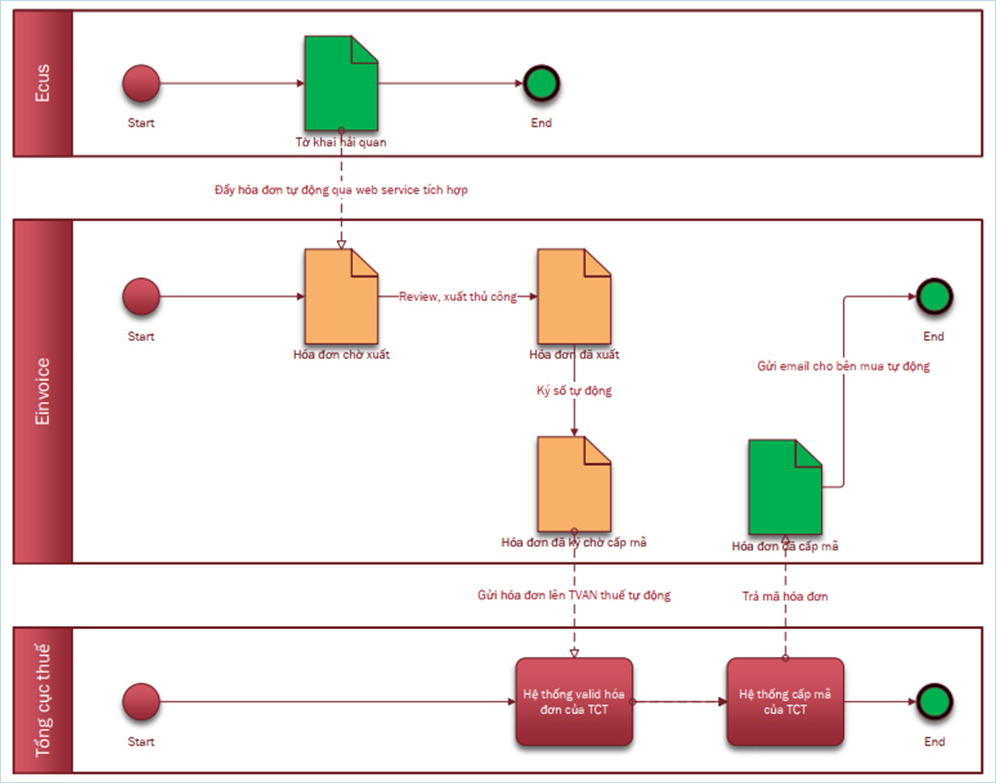
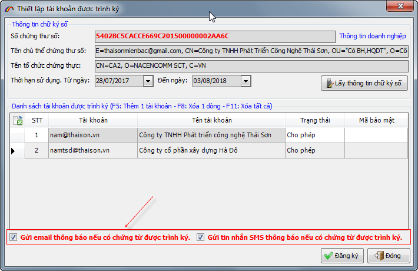

(Phiên bản update 26/07/2022)
Phần mềm ECUS5VNACCS2018 - Ngày phát hành 01/08/2022
Phiên bản cập nhật ngày 26/07/2022 được phát hành ngày 01/08/2022 bổ sung một số chức năng tiện ích đáng chú ý nhằm hỗ trợ tối đa cho doanh nghiệp và nâng cao chất lượng dịch vụ, cụ thể như phần giới thiệu và hướng dẫn dưới đây.
I - CHỨC NĂNG HÓA ĐƠN ĐIỆN TỬ TÍCH HỢP Xem hướng dẫn chi tiết tại đây
- 1. Giới thiệu chức năng
- Giảm tải cho người kê khai Hải quan và bộ phận kế toán do không phải thực hiện bước nhập dữ liệu hóa đơn thủ công.
- Đảm bảo tính chính xác về mặt số liệu, các thông tin được lấy từ tờ khai xuất khẩu.
- Kết nối linh hoạt đến hệ thống hóa đơn thông qua địa chỉ service.
- Bước 1: Thiết lập thông số kết nối, tích hợp hóa đơn điện tử.
- Bước 2: Tạo và khai báo tờ khai xuất khẩu.
- Bước 3: Tạo hóa đơn, phiếu xuất nội bộ và gửi sang hệ thống hóa đơn e-invoice.
- Bước 4: Người dùng trên hệ thống hóa đơn e-invoice kiểm tra thông tin hóa đơn đã được đồng bộ để thực hiện việc xuất hóa đơn, ký số và gửi đến cơ quan thuế.
- 2. Cơ sở hình thành chức năng
Chức năng hóa đơn tích hợp trên phần mềm ECUS5VNACCS hỗ trợ doanh nghiệp tạo dữ liệu Hóa đơn GTGT, Phiếu xuất kho nội bộ hoặc Hóa đơn bán hàng vào khu Phi thuế quan từ thông tin tờ khai xuất khẩu và gửi trực tiếp tới hệ thống hóa đơn e-invoice để ký số, xuất hóa đơn thông qua một Service. Đồng thời, chức năng giúp doanh nghiệp:
Các bước thực hiện đơn giản, bao gồm các bước sau đây:
Sơ đồ hoạt động hệ thống:

Căn cứ theo quy định tại điểm b, điểm c, khoản 3, Điều 13, Nghị định 123/NĐ-CP của chính phủ về việc áp dụng hóa đơn điện tử, phiếu xuất kho kiêm vận chuyển nội bộ, phiếu xuất kho hàng gửi bán đại lý đối với một số trường hợp cụ thể theo yêu cầu quản lý.
Công văn số 2054/TCHQ-GSQL ngày 03 tháng 06 năm 2022 của Tổng cục Hải quan về việc hướng dẫn sử dụng và thời điểm xuất hóa đơn điện tử cho hàng hóa xuất khẩu.
Như vậy chức năng tích hợp hóa đơn điện tử được tạo ra nhằm hỗ trợ doanh nghiệp xuất nhập khẩu trong việc tạo lập dữ liệu hóa đơn điện tử cho tờ khai xuất khẩu. Sau đó dữ liệu hóa đơn sẽ được đồng bộ sang hệ thống hóa đơn để xuất, ký số và gửi đến cơ quan thuế. Doanh nghiệp sẽ giảm tải được khâu nhập dữ liệu hóa đơn thủ công.
Doanh nghiệp vui lòng xem chi tiết hướng dẫn chức năng tại đây: Xem hướng dẫn chi tiết
II - CHUYỂN ĐỔI HỆ THỐNG TRÌNH KÝ SANG ECUSSIGN PRO Xem hướng dẫn nâng cấp
Từ 01/08/2022-31/08/2022 Thái sơn sẽ thực hiện chuyển đổi các tài khoản trình ký thông thường lên hệ thống trình ký Pro (hoàn toàn miễn phí), nhằm đảm bảo nâng cao chất lượng dịch vụ.
Hệ thống trình ký ECUSSign Pro là phiên bản cho phép doanh nghiệp trình ký trên hệ thống DC (Data Center) chuyên nghiệp, có đường truyền đảm bảo tốc độ cao, nhanh chóng thuận tiện, đặc biệt đây là bản hoàn toàn miễn phí, phiên bản này có các tính năng và điểm nổi bật vượt trội như:
- Trình ký và quản lý dữ liệu hiệu quả trên hệ thống Data center chuyên nghiệp
- Đường truyền đảm bảo tốc độ cao giúp cho việc trình và duyệt ký hầu như tức thì.
- Tích hợp chức năng thông báo khi có chứng từ trình đến cho người duyệt ký biết, thông qua email hoặc tin nhắn SMS trên điện thoại.
- Đây là phiên bản hoàn toàn miễn phí cho cả bên trình ký khi đăng ký tài khoản và bên duyệt ký chứng từ.

Hệ thống trình ký ECUSSignPro có đường truyền tốc độ cao, giúp cho việc trình và duyệt ký nhanh chóng nhất, đảm bảo quá trình kê khai hồ sơ Hải quan được xuyên suốt:
Hệ thống còn tích hợp thêm chức năng thông báo cho người duyệt ký khi có chứng từ trình đến, thông qua email hoặc tin nhắn SMS để công việc không bị bỏ lỡ hoặc chậm trễ trong việc ký chứng từ:

Doanh nghiệp vui lòng xem chi tiết hướng dẫn các bước nâng cấp tại đây: Xem hướng dẫn chi tiết
Bản quyền © thuộc về Công ty TNHH Phát triển công nghệ Thái Sơn